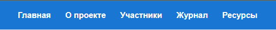
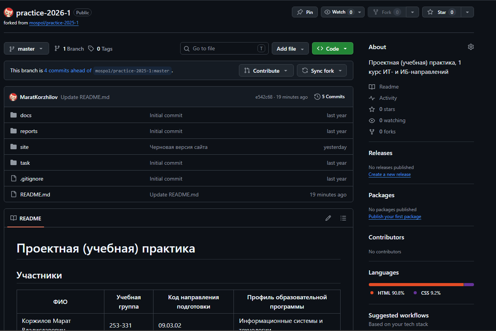
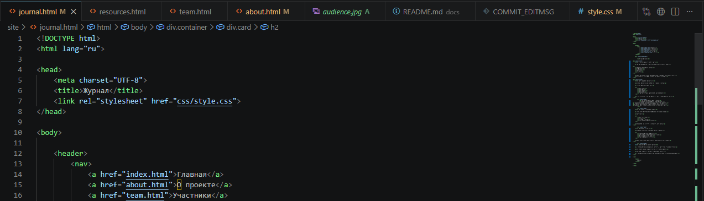

Разработана базовая структура сайта из нескольких страниц:
Также определена логика навигации между страницами через единое меню.
Составлен черновой план контента для каждой страницы.

Создан репозиторий на GitHub для хранения проекта.
Освоены базовые команды Git:
Первый коммит содержал базовую структуру HTML-файлов проекта.

Созданы основные HTML-страницы проекта.
Реализована единая навигационная панель для всех разделов.
Прописаны базовые блоки страниц (header, main, footer).
Добавлены заготовки под будущий контент и медиа-материалы.
Подключены CSS-стили для визуального оформления сайта.
Настроены:
Сделан упор на простоту и читаемость интерфейса.

Добавлено текстовое содержание на все страницы:
Также подготовлены заготовки под изображения и иллюстрации.
Проведена проверка сайта на корректность работы всех страниц и ссылок.
Исправлены мелкие ошибки в верстке и структуре файлов.
Улучшена читаемость текста и выравнивание блоков.
Проект подготовлен к сдаче и дальнейшему оформлению отчётной документации.